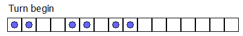
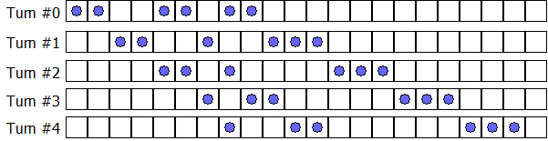

Project Euler 426
Project Euler 426
题目
Box-ball system
Consider an infinite row of boxes. Some of the boxes contain a ball. For example, an initial configuration of \(2\) consecutive occupied boxes followed by \(2\) empty boxes, \(2\) occupied boxes, \(1\) empty box, and \(2\) occupied boxes can be denoted by the sequence \((2, 2, 2, 1, 2)\), in which the number of consecutive occupied and empty boxes appear alternately.
A turn consists of moving each ball exactly once according to the following rule: Transfer the leftmost ball which has not been moved to the nearest empty box to its right.
After one turn the sequence \((2, 2, 2, 1, 2)\) becomes \((2, 2, 1, 2, 3)\) as can be seen below; note that we begin the new sequence starting at the first occupied box.

A system like this is called a Box-Ball System or BBS for short.
It can be shown that after a sufficient number of turns, the system evolves to a state where the consecutive numbers of occupied boxes is invariant. In the example below, the consecutive numbers of occupied boxes evolves to \([1, 2, 3]\); we shall call this the final state.

We define the sequence \(\{t_i\}\):
\(s_0 = 290797\)
\(s_{k+1} = s_k^2 \bmod 50515093\)
\(t_k = (s_k \bmod 64) + 1\)
Starting from the initial configuration \((t_0, t_1, \dots, t_{10})\), the final state becomes \([1, 3, 10, 24, 51, 75]\).
Starting from the initial configuration \((t_0, t_1, \dots, t_{10 000 000})\), find the final state.
Give as your answer the sum of the squares of the elements of the final state. For example, if the final state is \([1, 2, 3]\) then \(14 ( = 1^2 + 2^2 + 3^2)\) is your answer.
解决方案
我们把无限盒子中的 \(0/1\) 状态按连续段长度压缩为交替序列：\((O_0, H_0, O_1, H_1, \ldots, H_{m-1}, O_m),\)其中：\(O_i\) 表示第 \(i\) 个连续有球段长度；\(H_i\) 表示第 \(i\) 个连续空段长度。
BBS 的核心结构是稳定块。可见，每一块长度越大速度越快。碰撞不会改变每个块的长度，只会改变它们的前后间距和出现位置。长时间后会分离，最终只剩长度多重集不变。所以本题真正要算的是：最终稳定块长度多重集，而不是每一轮的细节状态。
考虑局部\(\cdots,H_l,O=x,H=y,O_r,\cdots\)，如果\(x\le y,\)那么这段 \(O=x\) 的球在向右找空位时，可完全容纳在紧邻的这段空位里，不需要依赖更右侧结构。于是可以把这个长度 \(x\) 视为一个已经确定的最终块，先加入答案。剥离这一块后，右空段剩余 \(y-x\)；被剥离的 \(O=x\) 与其后的 \(H=y\) 从序列中删除；左空段与右空段剩余部分在缩并串里相邻并合并。于是得到缩并规则：\(H_l\leftarrow H_l+(y-x).\)
考虑在序列两端加两个超大哨兵：\(B=[+\infty,t_0,t_1,\ldots,t_N,+\infty].\)反复执行：找最左下标 \(i\) 使\(B_i\le B_{i+1}.\)令 \(x=B_i\)，答案加\(x^2.\)之后更新\(B_{i-1}\leftarrow B_{i-1}+(B_{i+1}-B_i).\)随后删除 \(B_i,B_{i+1}\)。重复直到只剩哨兵。
这个算法之所以对，核心就在于：在 BBS 里，块碰撞后大小不变，只是位置会前后错开，所以我们只需要关心最终会有哪些块长度；当局部出现 \(O=x,H=y,x\le y\) 时，这个长度为 \(x\) 的块已经可以独立确定，先计入答案是安全的。计入后把这段从系统中删掉，右侧空段剩下 \(y-x\)，与左侧空段合并，得到\(H_l \leftarrow H_l + (y-x),\)这与剩余系统继续演化的结果等价。每做一次消元，就会少一个有球段，过程一定结束；最终恰好把所有块长度各计一次，所以平方和正确。
代码
1 | from array import array |